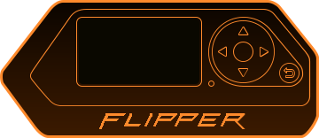

InfraFi
IR WiFi Credential Receiver Daemon
v{{VERSION}}



Flipper Zero App
Flipper Zero firmware
Install the companion app on your Flipper Zero to transmit WiFi credentials over IR.
Get on Flipper Labapt
Debian, Ubuntu, Mint
$ curl -fsSL https://amd989.github.io/InfraFi/setup.sh | sudo bash
$ sudo apt install infrafiddnf / yum
RHEL, Rocky Linux, Fedora
$ curl -fsSL https://amd989.github.io/InfraFi/setup-rpm.sh | sudo bash
$ sudo dnf install infrafid